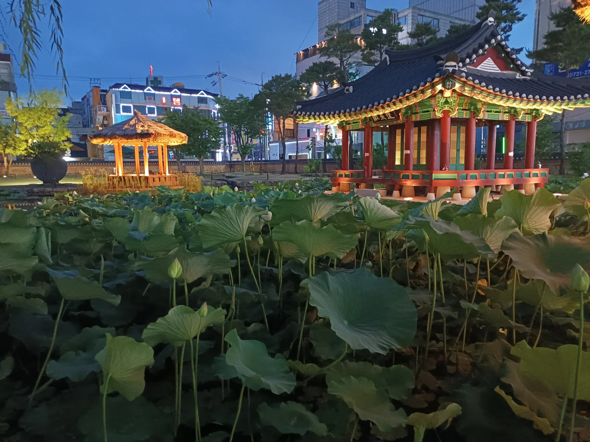
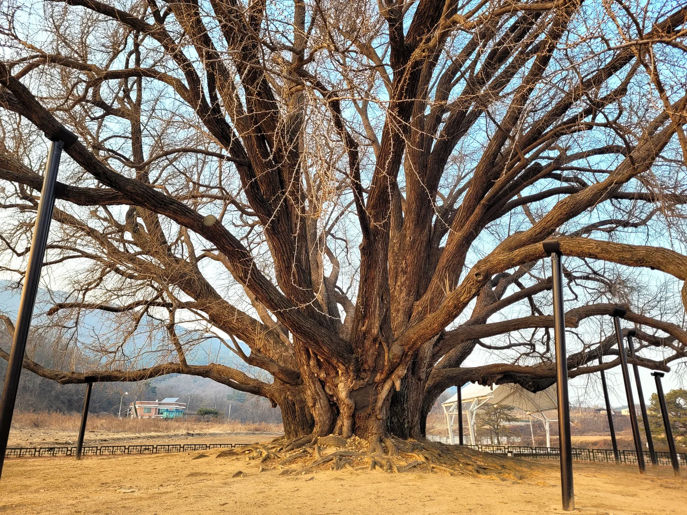
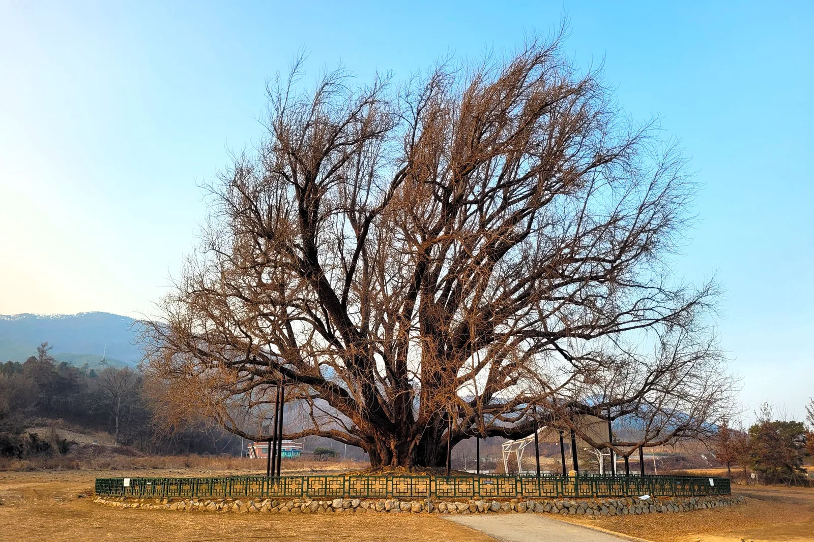
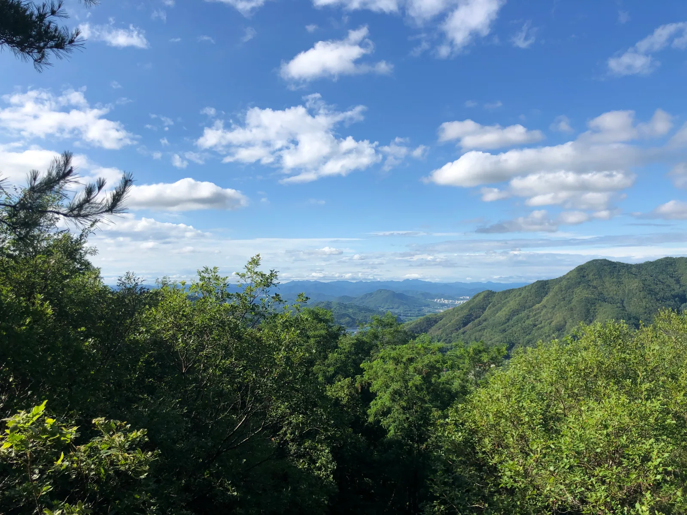

▲ 천연기념물 제167호 원주 반계리 은행나무. 2024년 라이다(LiDAR) 정밀조사에서 수령 1317년으로 확인돼 국내 최고령 은행나무로 공인됐다
강원 원주시 명륜동(明倫洞)은 도심 한복판, 서원대로를 따라 원주종합운동장과 원주시청이 자리한 행정·생활 중심지다. 일제강점기 '남산정(南山町)'이라 불리던 이 동네는 광복 후 일제 잔재를 청산하며 조선시대 지방 교육기관인 원주향교의 명륜당(明倫堂)에서 이름을 따 지금의 '명륜동'이 됐다. 그런데 정작 원주에서 가을 은행나무로 전국적인 이름을 알린 곳은 명륜동이 아니라, 차로 30분 남짓 떨어진 문막읍 반계리다. 이곳에는 2024년 정밀조사로 국내 최고령임이 확인된 천연기념물 은행나무가 서 있다. 원주 도심과 반계리 은행나무를 함께 묶어 돌아보는 법을 정리했다.
1. 원주 명륜동 — 원주향교 명륜당에서 이름을 딴 도심 동네

▲ 원주 도심에 복원된 조선시대 관아 강원감영의 야경. 명륜동에서 도보 10분 거리로, 원주 원도심을 함께 둘러보기 좋다 ⓒ Wikimedia Commons
명륜동은 원주종합운동장(서원대로 311)을 중심으로 관공서와 주거지가 밀집한 원주 원도심의 한 축이다. 동명의 유래가 된 원주향교는 고려시대 창건된 지방 교육기관으로, 이런 향교 주변에는 전통적으로 학문과 장수를 상징하는 은행나무를 심는 경우가 많았다. 서원대로와 원주종합운동장 일대에도 가로수로 심어진 은행나무들이 있어, 매년 10월 하순이면 도심 산책로를 따라 노란 단풍을 볼 수 있다. 반계리처럼 압도적인 규모는 아니지만, 원주시민들이 일상적으로 가을을 즐기는 생활권 산책 코스라는 점이 특징이다. 도보로 10분 거리에는 조선시대 강원도 관찰사가 업무를 보던 관아인 강원감영이 복원돼 있어, 야간 조명이 켜지는 저녁 시간대에 함께 둘러보기 좋다.
2. 반계리 은행나무 — 수령 1317년, 국내 최고령 공인

▲ 반계리 은행나무의 밑동. 가슴높이 둘레만 14.47m에 달하며, 줄기가 여러 갈래로 갈라져 자란 것이 특징이다(겨울철 촬영) ⓒ Wikimedia Commons
문막읍 반계리에 있는 이 은행나무는 1964년 1월 31일 천연기념물 제167호로 지정될 당시 수령 800년으로 추정됐지만, 2024년 국립산림과학원이 라이다(LiDAR) 스캔으로 나이테 없이도 생장 정보를 분석한 결과 수령 1317년으로 새롭게 확인됐다. 이로써 국내에 공식 확인된 은행나무 중 가장 오래된 나무로 공인됐다. 높이 26.2m, 가슴높이 줄기 둘레 14.47m, 수관 폭은 남북으로 약 31m에 이르는 거목으로, 성주 이씨 가문 사람이 심었다는 설과 한 대사가 짚고 다니던 지팡이가 자란 것이라는 전설이 함께 전해진다. 마을 사람들은 이 나무에 큰 구렁이가 산다고 여겨 신성시해왔다.

▲ 겨울철 반계리 은행나무의 전체 수형. 사방으로 넓게 뻗은 가지가 단풍철에는 황금빛 천막처럼 보인다 ⓒ Wikimedia Commons
| 항목 | 내용 |
|---|---|
| 위치 | 강원특별자치도 원주시 문막읍 반계리 |
| 지정 | 천연기념물 제167호(1964년 1월 31일) |
| 수령 | 1,317년(2024년 국립산림과학원 라이다 조사 확인) |
| 규모 | 높이 26.2m, 가슴높이 둘레 14.47m, 수관 폭 남북 약 31m |
| 단풍 절정 | 10월 말~11월 초 |
| 이용시간·요금 | 24시간 개방, 무료 |
| 주차 | 2025년 9월 29일 준공한 반계리 은행나무 광장 무료주차장(총사업비 85억 원) |
3. 2025년 새로 열린 '반계리 은행나무 광장'
그동안 반계리 은행나무는 마을 안쪽 농로를 따라 들어가야 해 단풍철마다 좁은 길에 차량이 몰려 정체가 심했다. 원주시는 총사업비 85억 원을 들여 나무 인근에 잔디광장·야외무대와 무료 주차장을 갖춘 반계리 은행나무 광장을 조성해 2025년 9월 29일 준공식을 열었고, 이어 같은 해 11월 2일에는 재개장 이후 첫 공식 축제를 열어 방문객을 맞았다. 광장이 열리면서 방문객들은 이전보다 나무에 더 가까이, 더 온전한 형태로 다가가 감상할 수 있게 됐다. 단, 단풍 절정기인 10월 말~11월 초 주말에는 여전히 방문객이 몰리므로 오전 이른 시간대 방문을 추천한다.
4. 치악산 국립공원 — 원주를 대표하는 또 다른 가을 명소

▲ 원주를 병풍처럼 둘러싼 산줄기. 원주는 치악산국립공원을 낀 산악 도시로, 가을이면 반계리 은행나무 외에도 단풍 명소가 곳곳에 있다 ⓒ Wikimedia Commons
원주는 은행나무 외에도 치악산국립공원을 품고 있어 가을 단풍 드라이브 코스로도 손꼽힌다. 반계리 은행나무와 명륜동 도심을 오전에 둘러본 뒤, 오후에는 구룡사 계곡이나 성황림 등 치악산 자락의 단풍 명소로 이동하는 일정도 가능하다. 원주 시내에서 반계리까지는 승용차로 약 20~30분, 대중교통은 원주시외버스터미널에서 55번·55-1번 버스로 문막읍까지 간 뒤 문막2리 마을버스로 환승하면 된다.
5. 하루 코스 짜기 — 명륜동 도심에서 반계리까지
| 시간대 | 코스 | 소요 |
|---|---|---|
| 오전 | 명륜동 서원대로·원주종합운동장 일대 산책, 강원감영 관람 | 약 1~1.5시간 |
| 이동 | 명륜동 → 문막읍 반계리(자가용 기준) | 약 20~30분 |
| 낮 | 반계리 은행나무 광장 관람 및 휴식 | 약 1시간 |
| 오후 | 치악산 구룡사 계곡 단풍 드라이브(선택) | 약 2시간 |
도심 산책과 천년 고목 감상을 하루에 묶으면 이동 시간까지 포함해 반나절이면 충분하다. 반계리 은행나무는 단풍이 절정에 이르는 10월 말~11월 초 주말에 방문객이 집중되므로, 평일이나 이른 오전 시간대를 노리는 편이 여유롭게 둘러보기에 좋다.
6. 원주 은행나무 여행, 가기 전 체크리스트
✅ 원주 은행나무 여행, 가기 전 체크리스트
· 명륜동은 원주향교 명륜당에서 이름을 딴 원주 도심 행정동, 서원대로·원주종합운동장 일대에 가로수 은행나무
· 반계리 은행나무(천연기념물 167호)는 2024년 조사로 수령 1,317년 확인, 국내 최고령 공인
· 규모는 높이 26.2m·가슴높이 둘레 14.47m, 24시간 개방·무료
· 2025년 9월 29일 준공한 '반계리 은행나무 광장'(사업비 85억 원)에서 무료 주차 가능, 11월 2일 첫 공식 축제
· 단풍 절정은 10월 말~11월 초, 주말은 혼잡하니 평일·오전 추천
· 명륜동에서 반계리까지 자가용 약 20~30분, 대중교통은 시외버스터미널→55·55-1번 버스 환승